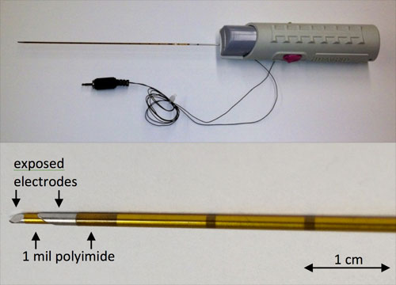
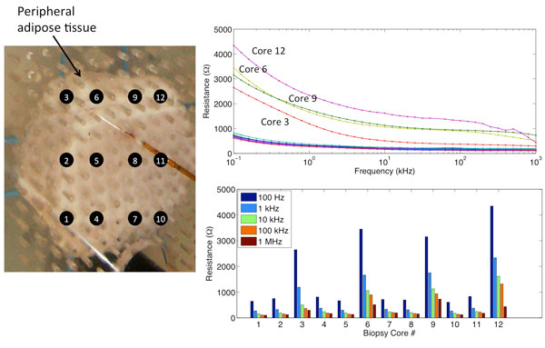

Incorporating Electrical Property Sensing Into a Clinical Biopsy Needle for Enhanced Prostate Cancer Detection
With funds from the Department of Defense Congressionally Directed Medical Research Programs, we have integrated an electrical impedance spectroscopy (EIS) sensing device onto a standard 18-gauge biopsy (Bx) needle to provide real-time feedback regarding the pathological state of the tissue based on it's electrical properties.
Diagnosis of prostate cancer is based on microscopic review of tissue cores extracted during image-guided biopsy procedures. Unfortunately, less than 1% of the prostatic volume is used for diagnosis because of the small number of cores and small tissue volumes extracted. We have demonstrated in previous studies that sensing the electrical properties of prostate may provide a technique for discriminating between cancer and benign tissues.
Our preliminary clinical findings from ex vivo tissue samples suggest that the electrical properties recorded with this device provide significant contrast between cancer and benign tissues and may have the potential to provide real-time pathological feedback during routine biopsy procedures.

Prototype EIS-Bx device. Top photo shows the standard biopsy needle used in the clinic with additional insulating layers (gold colored tubing). Bottom image shows the needle tip with two electrodes for recording electrical properties.

Example data set collected from a porcine sample of tissue. Electrical properties were recorded over the frequency range of 100Hz – 1 MHz from muscle and a 1.5 cm rind of adipose tissue (cores 3, 6, 9, & 12) Adipose tissue has a significantly high resistance to current flow than muscle. This is reflected in the data collected with this EIS-Bx device.